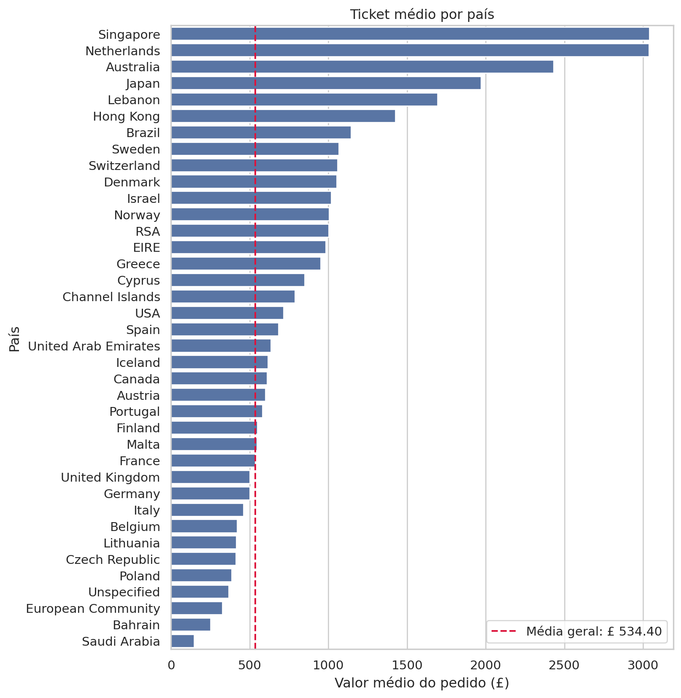
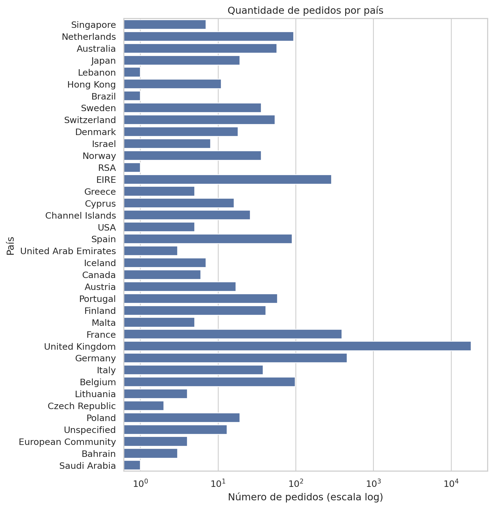
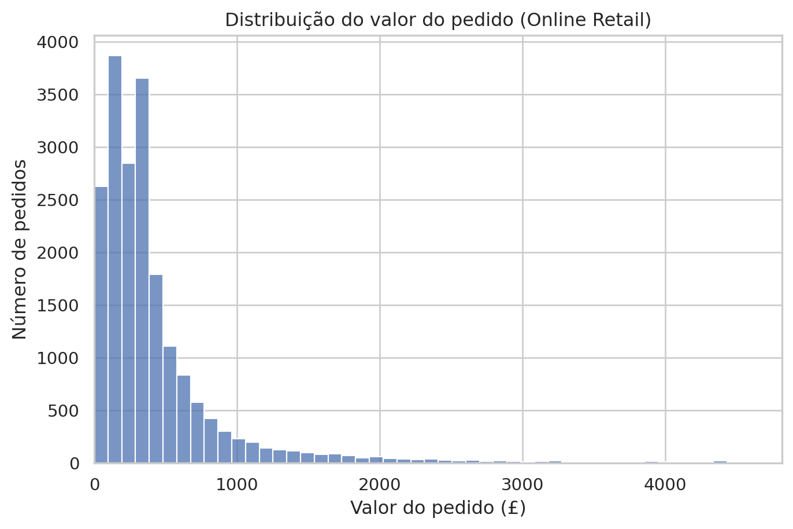
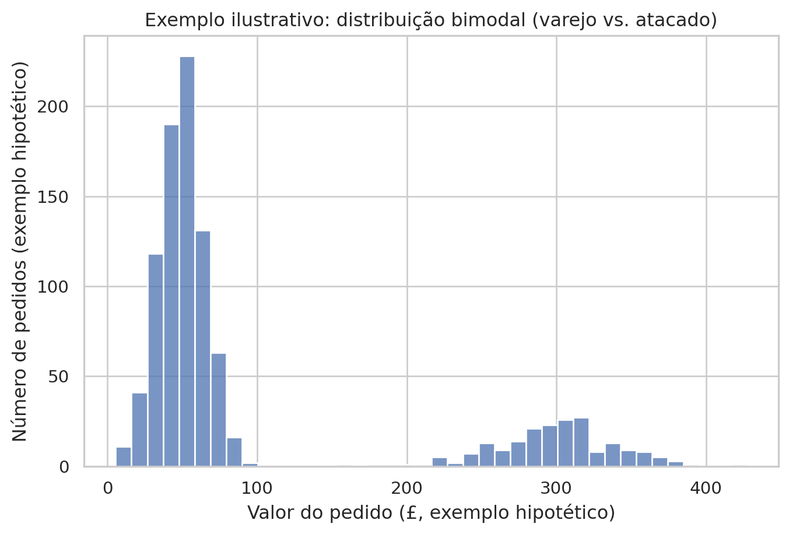
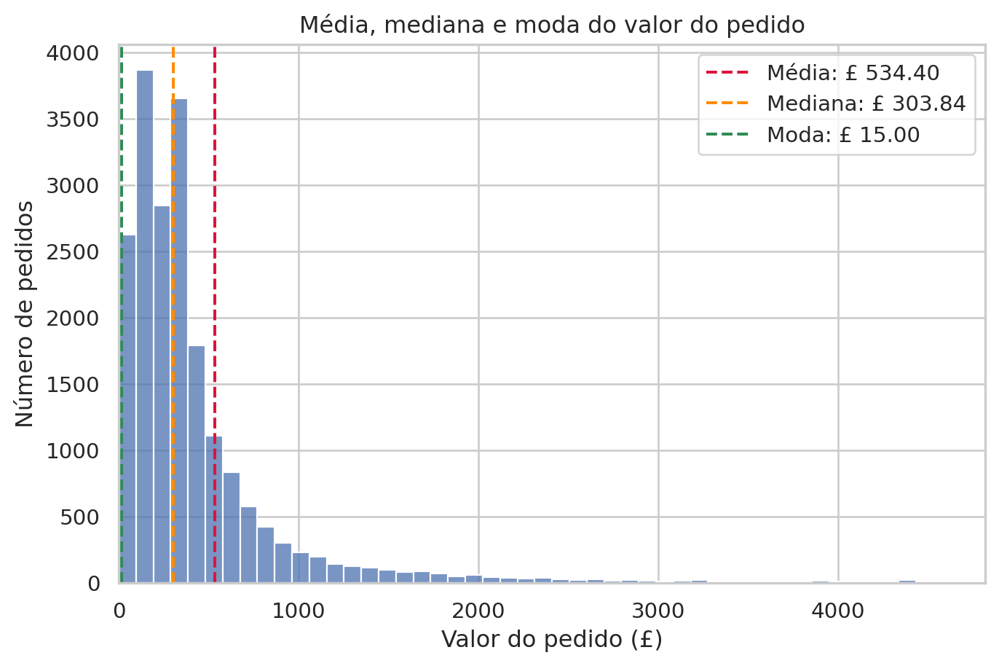
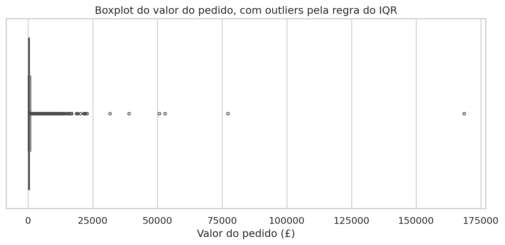
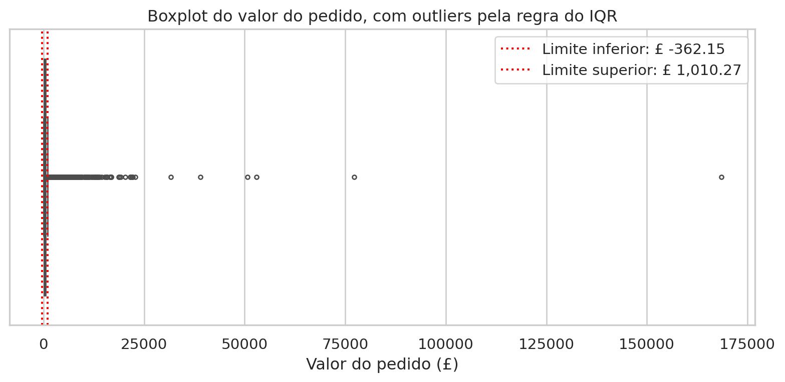
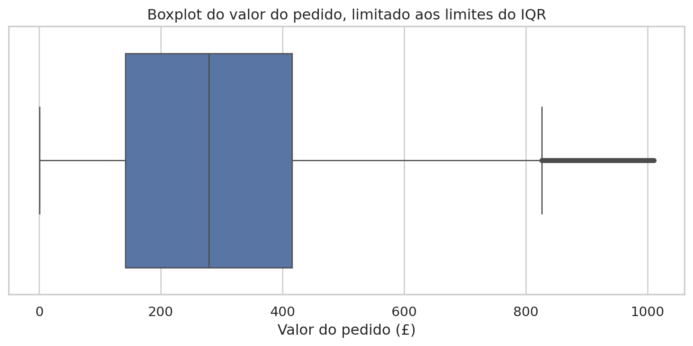
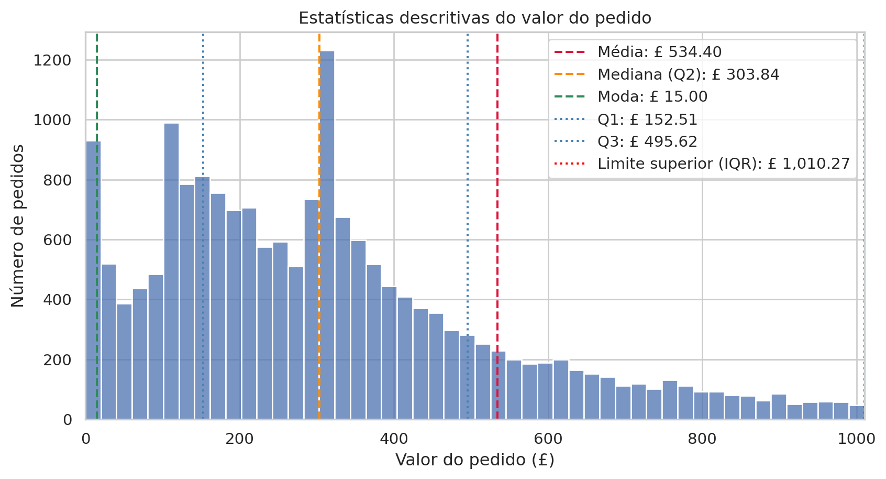

Na Aula 3, você calculou o ticket médio com orders["order_value"].mean(). O resultado, porém, suscita questões importantes. Por que a divisão da soma dos valores pelo número de pedidos seria a forma adequada de representar uma venda típica? Como esse resultado se altera quando um cliente atacadista realiza um pedido cem vezes maior que o habitual? Além disso, a média deve ser apresentada isoladamente ao gestor ou acompanhada por uma medida da variação entre os pedidos?
Essas questões pertencem à estatística descritiva, área que reúne métodos para sintetizar uma distribuição em medidas representativas, sem generalizar os resultados para além dos dados observados. A estatística inferencial, estudada posteriormente no curso, utiliza dados amostrais para formular conclusões sobre uma população. Nesta aula, o conjunto Online Retail será descrito por diferentes medidas, cuja adequação dependerá das características dos dados e da finalidade da análise.
Na Aula 3, observou-se que a base contém clientes atacadistas cujos volumes de compra superam amplamente o padrão. Essa constatação será examinada por meio dos conceitos de assimetria, valor atípico e robustez. Ao final da aula, você retomará o ticket médio e avaliará, com base nos resultados obtidos, se essa medida representa adequadamente o valor dos pedidos para o gestor de vendas.
Objetivos de aprendizagem
Ao final deste roteiro, você será capaz de:
Distinguir população e amostra e reconhecer por que a representatividade de uma amostra importa mais do que seu tamanho.
Calcular e interpretar média, mediana, moda e valor esperado.
Calcular médias ponderada e aparada e explicar quando cada uma é preferível à média simples.
Calcular e interpretar desvio, variância, desvio-padrão, desvio absoluto médio, desvio absoluto mediano, percentis e amplitude interquartílica (IQR).
Usar a assimetria (skewness) e a curtose (kurtosis) para descrever o formato de uma distribuição e identificar indícios de valores atípicos.
Escolher, com justificativa, entre uma medida sensível a outliers e uma medida robusta, diante de uma distribuição real e assimétrica.
Como usar este roteiro
Este roteiro pressupõe que o projeto projeto-vendas, desenvolvido nas aulas anteriores, esteja funcionando e que o conjunto Online Retail esteja disponível em data/. Na seção 2, são reconstruídas as tabelas sales, orders e customers elaboradas na Aula 3. As medidas estatísticas podem, assim, ser aplicadas a dados de negócio reais. Não é necessário instalar novas bibliotecas. Além de pandas e numpy, o roteiro utiliza scipy nos cálculos estatísticos e matplotlib e seaborn nas visualizações. Ao final, três questões propõem a escolha de medidas adequadas para uma distribuição real.
1. Retomando o projeto
Comece pela verificação do estado atual do projeto.
# Onde paramos? O git log conta a historia ate aqui:!cd ./projeto-vendas && git log --oneline# E o estado atual? Espera-se uma area de trabalho limpa:!cd ./projeto-vendas && git status
bbe6150 (HEAD -> master) Adiciona pandas e registra dependencias em requirements.txt
1b4999b Adiciona .gitignore para ambiente, dados e segredos
2ce3f11 Adiciona README com a descricao do projeto
On branch master
Changes not staged for commit:
(use "git add <file>..." to update what will be committed)
(use "git restore <file>..." to discard changes in working directory)
modified: README.md
modified: requirements.txt
no changes added to commit (use "git add" and/or "git commit -a")
Se o histórico exibir os commits das aulas anteriores e o status indicar que não há alterações pendentes, o ambiente e os dados estarão prontos.
2. Preparando os dados
O ponto de partida é o mesmo da Aula 3. Primeiro, carrega-se a base, calcula-se a receita por item, cria-se o indicador de cancelamento e isolam-se as vendas válidas. As bibliotecas são importadas em uma única etapa. Pandas e numpy apoiam a manipulação dos dados, scipy fornece as funções estatísticas da seção 6, e matplotlib e seaborn são empregados nas visualizações.
from pathlib import Pathimport numpy as npimport pandas as pdimport openpyxlimport matplotlib.pyplot as pltimport seaborn as snsfrom scipy import statssns.set_theme(style="whitegrid")
Em seguida, são reconstruídas duas agregações da Aula 3. A tabela orders contém uma linha por pedido, enquanto customers contém uma linha por cliente identificado.
Antes de calcular uma medida estatística, é necessário definir o conjunto ao qual ela se refere. A população corresponde à totalidade dos elementos que se pretende estudar. A amostra é um subconjunto dessa população, utilizado quando o exame de todos os elementos é inviável ou dispendioso.
O Online Retail é a população de vendas da loja ou apenas uma amostra?
A resposta depende do universo ao qual se pretende generalizar os resultados. Se a base constitui um registro completo das transações realizadas entre dezembro de 2010 e dezembro de 2011, ela pode ser considerada a população desse período. Para prever o comportamento da loja no ano seguinte, contudo, o mesmo conjunto funciona como amostra, pois representa apenas um dos vários períodos possíveis.
Essa distinção é relevante porque a validade das conclusões depende da representatividade da amostra, e não apenas de seu tamanho. Uma amostra enviesada pode conduzir a conclusões inadequadas. Para examinar esse problema, compara-se a média de order_value do conjunto completo com a de duas amostras de 200 pedidos. A primeira é sorteada aleatoriamente entre todos os países. A segunda contém apenas pedidos do Reino Unido, país predominante na base, e por isso apresenta viés de seleção.
Espera-se que a média da amostra aleatória oscile em torno da média populacional em razão da variabilidade amostral. A amostra enviesada tende a apresentar média inferior, pois o ticket médio do Reino Unido é menor que o dos demais países em conjunto. Portanto, a média dos pedidos britânicos não deve ser generalizada para todos os países, ainda que as duas amostras tenham o mesmo tamanho.
A amostra enviesada (£ 465,36) ficou mais próxima da média geral (£ 534,40) do que a amostra aleatória (£ 445,14). O viés é pequeno porque a própria base é desbalanceada. Como o Reino Unido responde por aproximadamente 90% dos pedidos, uma amostra restrita a esse país tende a permanecer próxima de uma amostra formada por todos os países. A amostra balanceada produz o efeito oposto. Ao atribuir o mesmo peso aos 38 países, sua média aumenta para £ 1.064,50, quase o dobro da média populacional. Embora registrem poucos pedidos, os países situados fora do Reino Unido apresentam ticket médio substancialmente maior. Balanceamento e representatividade, portanto, não são equivalentes. Uma amostra representativa preserva a proporção observada de cada grupo, enquanto uma amostra balanceada responde a outra pergunta, relacionada ao pedido médio por país, e não ao pedido médio da loja.
.groupby("country").sample(n=5, replace=True) sorteia 5 pedidos de cada um dos 38 países, dando peso igual a todos eles. replace=True é necessário porque alguns países têm menos de 5 pedidos na base inteira.
O argumento color="C0" atribui uma única cor a todas as barras e evita o mapeamento dos 38 países para cores diferentes, o que prejudicaria a leitura.

A maioria dos países situa-se acima da média geral. O Reino Unido, que concentra o maior volume de pedidos, é um dos poucos países abaixo dessa referência. Por isso, a atribuição do mesmo peso a todos os países eleva a média. Individualmente, a maioria apresenta ticket médio superior ao valor geral, embora participe com poucos pedidos.
O gráfico seguinte apresenta a quantidade de pedidos por país. A ordem dos países é mantida para permitir a comparação direta entre ticket médio e volume.
country_order_count = orders.groupby("country")["order_value"].size()fig, ax = plt.subplots(figsize=(8, 10))sns.barplot( x=country_order_count.values, y=country_order_count.index,1 order=country_order_value_mean.index, ax=ax, color="C0",)2ax.set_xscale("log")ax.set_xlabel("Número de pedidos (escala log)")ax.set_ylabel("País")ax.set_title("Quantidade de pedidos por país")plt.show()
1
order=country_order_value_mean.index reaproveita a mesma ordem de países do gráfico de ticket médio, para que as duas barras da mesma linha sejam sempre o mesmo país.
2
A quantidade varia de um pedido, em países como Brasil e Líbano, a milhares de pedidos no Reino Unido. Em escala linear, essa diferença dificultaria a leitura das barras menores. A escala logarítmica permite visualizar simultaneamente os dois extremos.

A comparação entre os gráficos revela uma relação inversa. Os países com maior ticket médio tendem a registrar menor quantidade de pedidos, enquanto o Reino Unido apresenta o padrão oposto. Essa associação explica a divergência entre a média da amostra balanceada e a média do conjunto completo.
4. Medidas de tendência central
As medidas de tendência central sintetizam um conjunto de dados em um valor representativo de seu centro. Antes de calculá-las, convém examinar a distribuição dos valores dos pedidos.
1upper_limit = orders["order_value"].quantile(0.99)fig, ax = plt.subplots(figsize=(8, 5))2sns.histplot(orders["order_value"], bins=50, binrange=(0, upper_limit), ax=ax)ax.set_xlim(0, upper_limit)ax.set_xlabel("Valor do pedido (£)")ax.set_ylabel("Número de pedidos")ax.set_title("Distribuição do valor do pedido (Online Retail)")plt.show()
1
O 99º percentil delimita a faixa que contém a maior parte dos pedidos. A inclusão dos valores superiores ocultaria a forma da distribuição devido ao pequeno número de pedidos atacadistas muito elevados.
2
binrange=(0, upper_limit) calcula as 50 faixas dentro dessa janela. Sem isso, os pedidos de atacado (até £ 168 mil) esticam as faixas por um intervalo enorme, e quase todos os dados caem comprimidos numa ou duas barras.

A maior parte dos pedidos concentra-se em uma faixa relativamente baixa de valores, e a distribuição apresenta uma cauda extensa à direita. Essa assimetria será quantificada na seção 6.
4.1 Média
A média corresponde à soma dos valores dividida pela quantidade de observações. O cálculo manual para o valor dos pedidos pode ser comparado ao resultado do método fornecido pelo pandas.
Média calculada manualmente: £ 534.40
Média via .mean(): £ 534.40
4.2 Valor esperado
A média também pode ser interpretada por meio do valor esperado. Em vez de somar todas as observações e dividir o resultado por n, agrupam-se valores semelhantes, multiplica-se a média de cada grupo pela proporção correspondente e somam-se os produtos. Esse cálculo é expresso por E[X] = Σ xᵢ P(X = xᵢ). A seguir, ele é aplicado ao valor do pedido, dividido em dez grupos de tamanho aproximadamente igual.
pd.qcut(..., q=10) divide os valores dos pedidos em dez grupos de tamanho aproximadamente igual. O procedimento utiliza o mesmo princípio dos percentis, retomado na seção 5.3.
2
A proporção de cada grupo corresponde à sua contagem dividida pelo total de pedidos e estima a probabilidade de um pedido pertencer àquele intervalo.
Média direta: £ 534.40
Valor esperado E[X]: £ 534.40
Os dois resultados coincidem. Agrupar os pedidos por decis e ponderar a média de cada grupo por sua proporção equivale a reorganizar a soma dos mesmos valores. Por essa razão, o resultado é igual à média direta, independentemente do número de grupos utilizado.
4.3 Média ponderada e média aparada
A média simples atribui o mesmo peso a cada linha da base. Algumas questões, entretanto, referem-se às unidades vendidas, e não às linhas. Nesse caso, compara-se a média simples do preço unitário à média ponderada pela quantidade vendida de cada item. Esta última representa o preço médio efetivamente pago por unidade.
As duas médias divergem porque itens baratos costumam ser vendidos em quantidades maiores nesta base.
Outra forma de controlar a influência de valores extremos consiste em remover, antes do cálculo, uma proporção equivalente dos menores e dos maiores valores. A biblioteca scipy fornece uma função para esse procedimento.
1order_value_trimmed = stats.trim_mean(orders["order_value"], proportiontocut=0.05)print(f"Média simples do valor do pedido: £ {orders['order_value'].mean():.2f}")print(f"Média aparada (5% de cada lado): £ {order_value_trimmed:.2f}")
1
proportiontocut=0.05 descarta os 5% menores e os 5% maiores valores antes de calcular a média.
Média simples do valor do pedido: £ 534.40
Média aparada (5% de cada lado): £ 366.44
A média aparada é consideravelmente inferior à média simples, pois um pequeno número de pedidos muito elevados aumenta esta última.
4.4 Mediana
A mediana é o valor central de um conjunto ordenado. Metade das observações situa-se abaixo dela, e a outra metade, acima. Como depende da posição das observações, e não da soma de seus valores, é pouco sensível à magnitude dos extremos.
order_value_median = orders["order_value"].median()print(f"Média do valor do pedido: £ {orders['order_value'].mean():.2f}")print(f"Mediana do valor do pedido: £ {order_value_median:.2f}")
Média do valor do pedido: £ 534.40
Mediana do valor do pedido: £ 303.84
4.5 Moda
A moda é o valor (ou categoria) mais frequente. Ela pode ser calculada tanto para variáveis numéricas quanto categóricas, e nem sempre é única.
quantity_mode = sales["quantity"].mode()country_mode = sales["country"].mode()print(f"Quantidade mais frequente por linha de venda: {quantity_mode.tolist()}")print(f"País mais frequente: {country_mode.tolist()}")
Quantidade mais frequente por linha de venda: [1]
País mais frequente: ['United Kingdom']
A existência de mais de uma moda não se limita a empates entre valores. Quando uma distribuição reúne grupos com padrões de compra distintos, o histograma pode apresentar dois picos e caracterizar uma distribuição bimodal. Como esse padrão não ocorre nos valores dos pedidos do Online Retail, o exemplo seguinte utiliza dados sintéticos para ilustrá-lo.
4.5.1 Distribuição bimodal de clientes varejo e atacado
O exemplo seguinte é hipotético e não utiliza dados do conjunto analisado neste material. Sua finalidade é mostrar a forma de uma distribuição com mais de uma moda.
np.random.default_rng é o gerador atualmente recomendado pelo numpy. A semente fixa em 42 torna o exemplo reproduzível.
2
Os 800 valores em torno de £ 50 representam um grupo hipotético de clientes varejistas. Os 200 valores em torno de £ 300 representam clientes atacadistas.
3
Como a normal pode gerar valores negativos na cauda, descartamos qualquer valor abaixo de zero.

Os dois picos evidenciam a presença dos grupos. Se essa composição for ignorada, moda, média ou mediana podem produzir um resumo que não representa adequadamente nenhum deles.
4.6 Média versus mediana: o problema do cliente atacadista
Um exemplo divulgado em 2016 ilustra a sensibilidade da média a valores extremos. Formandos em Geografia de uma universidade norte-americana pareciam receber um salário inicial médio excepcionalmente alto porque um único ex-aluno, Michael Jordan, elevava a média do grupo. Sem essa observação, o salário típico da turma era muito menor. O caso demonstra como um valor extremo pode alterar a média sem produzir efeito comparável sobre a mediana.
O conjunto Online Retail apresenta situação semelhante devido aos clientes atacadistas identificados na Aula 3. A comparação seguinte mostra a receita média por cliente antes e depois da remoção do cliente com maior receita.
A remoção de um único cliente altera a média de forma perceptível, enquanto a mediana permanece praticamente estável. Quando a retirada da maior observação modifica substancialmente o resultado, poucos valores exercem influência elevada sobre a média. Nessas condições, a mediana descreve melhor o cliente típico. O mesmo efeito pode ser observado no valor dos pedidos pela posição da média, da mediana e da moda na distribuição.
order_value_mean = orders["order_value"].mean()1order_value_mode = orders["order_value"].mode().iloc[0]upper_limit = orders["order_value"].quantile(0.99)fig, ax = plt.subplots(figsize=(8, 5))2sns.histplot(orders["order_value"], bins=50, binrange=(0, upper_limit), ax=ax)ax.axvline(order_value_mean, color="crimson", linestyle="--", label=f"Média: £ {order_value_mean:,.2f}")ax.axvline(order_value_median, color="darkorange", linestyle="--", label=f"Mediana: £ {order_value_median:,.2f}")ax.axvline(order_value_mode, color="seagreen", linestyle="--", label=f"Moda: £ {order_value_mode:,.2f}")ax.set_xlim(0, upper_limit)ax.set_xlabel("Valor do pedido (£)")ax.set_ylabel("Número de pedidos")ax.set_title("Média, mediana e moda do valor do pedido")ax.legend()plt.show()
1
.mode() pode retornar mais de um valor. .iloc[0] seleciona o primeiro deles.
2
Mesmo ajuste de binrange usado no histograma da seção 4, para as 50 faixas caberem dentro da janela visível.

As três linhas seguem a ordem esperada em uma distribuição com assimetria positiva. A moda aparece à esquerda, a mediana ocupa a posição intermediária e a média se desloca para a direita sob a influência da cauda formada pelos pedidos de maior valor.
5. Medidas de dispersão
Duas distribuições com a mesma média podem apresentar comportamentos distintos. Uma pode concentrar-se ao redor do centro, enquanto a outra se distribui por um intervalo amplo. As medidas de dispersão quantificam essa diferença.
5.1 Desvio, variância e desvio-padrão
O desvio de uma observação em relação à média é dado por xᵢ - x̄. A variância corresponde à média dos quadrados desses desvios, procedimento que impede o cancelamento entre valores positivos e negativos. O desvio-padrão é a raiz quadrada da variância e, por isso, é expresso na unidade original dos dados.
A soma dos desvios em torno da média é sempre igual a zero. Por isso, a variância utiliza os quadrados dos desvios, e não seus valores brutos.
2
Por padrão, .var() e .std() do pandas usam ddof=1 (divisor n - 1), a correção usual quando se trata os dados como uma amostra. Aqui usamos ddof=0 para reproduzir exatamente a fórmula populacional calculada manualmente acima.
Em um conjunto com milhares de pedidos, a diferença entre os divisores n e n - 1 é pequena. A escolha de ddof=1, adotada por padrão, produz efeito mais relevante em amostras reduzidas.
5.2 Desvio absoluto médio e desvio absoluto mediano
A variância penaliza desvios grandes desproporcionalmente, por causa do quadrado. Duas alternativas mais robustas trabalham com valores absolutos: o desvio absoluto médio e o desvio absoluto mediano (MAD).
A comparação evidencia a forte assimetria dos dados e a presença de valores atípicos. O desvio absoluto mediano (MAD), de £ 161,84, oferece a estimativa mais robusta da variabilidade típica, pois sofre pouca influência dos extremos. O desvio absoluto médio, de aproximadamente £ 461,00, mede a distância absoluta média em relação à média aritmética. O desvio-padrão alcança £ 1.780,44 porque os desvios são elevados ao quadrado, o que amplia a influência das observações extremas.
5.3 Percentis e amplitude interquartílica
Um percentil P indica o valor abaixo do qual se encontra determinada proporção das observações. Os quartis correspondem aos percentis 25, 50 e 75, sendo o segundo quartil igual à mediana. A amplitude interquartílica (IQR) é a diferença entre o terceiro e o primeiro quartil e mede a dispersão da metade central dos dados com baixa sensibilidade aos extremos.
.quantile([0.25, 0.50, 0.75]) retorna os três quartis de uma vez, desempacotados diretamente em q1, q2 e q3.
2
stats.iqr calcula Q3 - Q1 diretamente.
order_value
Q1 (25%)
152.51
Q2 (mediana, 50%)
303.84
Q3 (75%)
495.62
IQR
343.10
Uma regra prática amplamente empregada classifica como potencial valor atípico qualquer observação inferior a Q1 - 1,5 × IQR ou superior a Q3 + 1,5 × IQR. A regra será aplicada para identificar os pedidos que exigem investigação, sem pressupor que devam ser descartados. Essa cautela retoma a distinção, discutida na Aula 3, entre operações de atacado e erros nos dados.
lower_bound = q1 -1.5* iqrupper_bound = q3 +1.5* iqroutlier_filter = order_values.lt(lower_bound) | order_values.gt(upper_bound)flagged_orders = orders.loc[outlier_filter]print(f"Limite inferior: £ {lower_bound:,.2f}")print(f"Limite superior: £ {upper_bound:,.2f}")print(f"Pedidos sinalizados pela regra do IQR: {len(flagged_orders):,} de {len(orders):,}")
Limite inferior: £ -362.15
Limite superior: £ 1,010.27
Pedidos sinalizados pela regra do IQR: 1,811 de 19,960
flagged_orders["country"].value_counts().head(10)
country
United Kingdom 1464
EIRE 68
Germany 47
France 44
Netherlands 43
Spain 20
Switzerland 12
Australia 11
Norway 11
Japan 11
Name: count, dtype: int64
Os pedidos sinalizados concentram-se em poucos países e reproduzem o padrão de compras em grande volume por clientes específicos, identificado na Aula 3 como possível atividade atacadista. A regra do IQR é útil para localizar candidatos a valores atípicos, mas a distinção entre erro e operação legítima requer investigação dos dados e do contexto de negócio.
O boxplot oferece uma representação visual dessas medidas. A caixa estende-se de Q1 a Q3, a linha interna indica a mediana, e os bigodes alcançam as observações mais extremas que ainda se encontram dentro dos limites definidos por 1,5 × IQR. Os pontos além desses limites são exibidos individualmente.
fig, ax = plt.subplots(figsize=(10, 4))1sns.boxplot(x=order_values, ax=ax, whis=1.5, fliersize=3)ax.set_xlabel("Valor do pedido (£)")ax.set_title("Boxplot do valor do pedido, com outliers pela regra do IQR")plt.show()
1
whis=1.5 reproduz a regra de 1,5 × IQR utilizada no cálculo de lower_bound e upper_bound. Os pontos além dos bigodes correspondem aos pedidos registrados em flagged_orders. fliersize=3 reduz o tamanho dos marcadores porque há muitas observações ao longo da cauda.

A caixa central compacta representa a metade dos pedidos situada entre Q1 e Q3. Os pontos à direita formam a cauda de pedidos elevados sinalizados pela regra do IQR, entre os quais podem existir operações de atacado.
fig, ax = plt.subplots(figsize=(10, 4))sns.boxplot(x=order_values, ax=ax, whis=1.5, fliersize=3)ax.axvline(lower_bound, color="red", linestyle=":", label=f"Limite inferior: £ {lower_bound:,.2f}")ax.axvline(upper_bound, color="red", linestyle=":", label=f"Limite superior: £ {upper_bound:,.2f}")ax.legend()ax.set_xlabel("Valor do pedido (£)")ax.set_title("Boxplot do valor do pedido, com outliers pela regra do IQR")plt.show()

Ao limitar a distribuição ao limite superior, a cauda de pedidos elevados é removida e a caixa central torna-se mais visível.
1trimmed_order_values = order_values[order_values.le(upper_bound)]fig, ax = plt.subplots(figsize=(10, 4))sns.boxplot(x=trimmed_order_values, ax=ax, whis=1.5, fliersize=3)ax.set_xlabel("Valor do pedido (£)")ax.set_title("Boxplot do valor do pedido, limitado ao limite superior do IQR")plt.show()
1
order_values.le(upper_bound) mantém apenas os pedidos com valor até o limite superior, removendo a cauda de valores sinalizados como potenciais outliers.
Por que ainda aparecem outliers após o corte?
O boxplot ainda exibe pontos além dos bigodes porque sns.boxplot recalcula Q1, Q3 e IQR a partir dos dados já filtrados, em vez de reaproveitar os limites originais. Como a distribuição permanece assimétrica à direita mesmo sem a cauda mais extrema, o critério de 1,5 × IQR volta a sinalizar como outliers as observações mais altas do subconjunto restante.
Limitando a distribuição também pelo limite inferior, ambas as caudas sinalizadas pela regra do IQR são removidas.
1trimmed_order_values = order_values[order_values.between(lower_bound, upper_bound)]fig, ax = plt.subplots(figsize=(10, 4))sns.boxplot(x=trimmed_order_values, ax=ax, whis=1.5, fliersize=3)ax.set_xlabel("Valor do pedido (£)")ax.set_title("Boxplot do valor do pedido, limitado aos limites do IQR")plt.show()
1
order_values.between(lower_bound, upper_bound) mantém apenas os pedidos com valor dentro dos limites inferior e superior, removendo as caudas sinalizadas como potenciais outliers.

Por que a remoção pelo lower_bound não alterou o boxplot?
Como order_value é sempre positivo e a distribuição é assimétrica à direita, lower_bound (Q1 - 1,5 × IQR) resulta em um valor negativo. Nenhum pedido tem valor abaixo de zero, logo a condição order_values.ge(lower_bound), embutida em between, não exclui nenhuma observação adicional além das já removidas por upper_bound. Por isso o segundo boxplot é visualmente idêntico ao primeiro.
O histograma a seguir reúne, em um único gráfico, as estatísticas descritivas vistas até aqui: medidas de tendência central (média, mediana e moda), os quartis (Q1, Q2, Q3 e Q4) e os limites de 1,5 × IQR.
order_values.quantile(1.00) corresponde ao percentil 100, ou seja, ao valor máximo da distribuição. Embora a divisão em quartis seja formada por Q1, Q2 e Q3, referir-se ao máximo como Q4 completa a leitura da distribuição em quatro quartos.
2
Q4 corresponde ao pedido de maior valor da base e está muito distante dos demais pedidos, o que já era esperado pela assimetria e pela cauda de outliers identificadas no boxplot.
order_value
Média
534.40
Mediana (Q2)
303.84
Moda
15.00
Q1 (25%)
152.51
Q2 (50%, mediana)
303.84
Q3 (75%)
495.62
Q4 (100%, máximo)
168469.60
Limite inferior
-362.15
Limite superior
1010.27
fig, ax = plt.subplots(figsize=(10, 5))1sns.histplot(trimmed_order_values, bins=50, binrange=(0, upper_bound), ax=ax)ax.axvline(order_value_mean, color="crimson", linestyle="--", label=f"Média: £ {order_value_mean:,.2f}")ax.axvline(order_value_median, color="darkorange", linestyle="--", label=f"Mediana (Q2): £ {order_value_median:,.2f}")ax.axvline(order_value_mode, color="seagreen", linestyle="--", label=f"Moda: £ {order_value_mode:,.2f}")ax.axvline(q1, color="steelblue", linestyle=":", label=f"Q1: £ {q1:,.2f}")ax.axvline(q3, color="steelblue", linestyle=":", label=f"Q3: £ {q3:,.2f}")ax.axvline(upper_bound, color="red", linestyle=":", label=f"Limite superior (IQR): £ {upper_bound:,.2f}")ax.set_xlim(0, upper_bound)ax.set_xlabel("Valor do pedido (£)")ax.set_ylabel("Número de pedidos")ax.set_title("Estatísticas descritivas do valor do pedido")ax.legend()plt.show()
1
O histograma usa trimmed_order_values, já limitado aos limites inferior e superior do IQR, para evitar que a cauda de outliers distorça a escala do eixo x. Q4 (o máximo) e o limite inferior, negativo, não aparecem como linhas verticais porque ficam fora dessa faixa visível; seus valores exatos constam na tabela de estatísticas descritivas acima.

O histograma confirma visualmente os resultados numéricos discutidos ao longo da seção: a moda e a mediana concentram-se nos valores mais baixos, a média é deslocada para a direita pelos pedidos de maior valor, e o limite superior do IQR já corta a distribuição próximo do início da cauda longa que caracteriza os pedidos de atacado.
6. Assimetria e curtose
Assimetria (skewness) e curtose (kurtosis) complementam as medidas de centro e dispersão na descrição da forma de uma distribuição. A assimetria indica a direção e a intensidade do prolongamento das caudas. A curtose expressa o peso das caudas e, portanto, a propensão da distribuição a produzir valores extremos. Na distribuição normal, tanto a assimetria quanto o excesso de curtose são iguais a zero.
order_value_skew = stats.skew(order_values)1order_value_kurtosis = stats.kurtosis(order_values)print(f"Assimetria (skewness) do valor do pedido: {order_value_skew:.2f}")print(f"Excesso de curtose (kurtosis) do valor do pedido: {order_value_kurtosis:.2f}")
1
stats.kurtosis já usa fisher=True por padrão, retornando o excesso de curtose (mesma convenção da distribuição normal como referência igual a zero): positivo indica caudas mais pesadas que a normal.
Assimetria (skewness) do valor do pedido: 51.07
Excesso de curtose (kurtosis) do valor do pedido: 4234.71
A assimetria positiva elevada indica uma cauda longa à direita e é compatível com a relação moda < mediana < média. O excesso de curtose positivo e elevado indica caudas mais pesadas que as da distribuição normal. Assim, valores muito distantes do centro, como os pedidos de atacado, ocorrem com frequência superior à esperada sob um modelo normal. Por outro lado, a curtose é menos evidente na inspeção direta dos dados porque descreve principalmente o peso das caudas, e não apenas a altura do pico. Costuma ser classificada em três tipos.
Os três histogramas sintéticos seguintes isolam esse efeito ao comparar distribuições centradas no mesmo ponto, cada uma representativa de um dos tipos.
6.1. Calculando assimetria manualmente
O coeficiente de assimetria calculado por stats.skew corresponde ao terceiro momento padronizado da distribuição, dado por:
Em que \(x_i\) é cada observação, \(\bar{x}\) é a média, e \(n\) é o número de observações. O numerador é o terceiro momento central, sensível ao sinal dos desvios: desvios à direita da média contribuem positivamente, e desvios à esquerda, negativamente. O denominador, o desvio-padrão elevado ao cubo, padroniza essa medida para que ela seja independente da escala dos dados. Quando a distribuição é simétrica, os desvios positivos e negativos se cancelam no numerador, e \(g_1\) se aproxima de zero.
(deviations ** 3).mean() reproduz o numerador da fórmula, \(\frac{1}{n}\sum_{i=1}^{n}(x_i - \bar{x})^3\).
2
order_values.std(ddof=0) ** 3 reproduz o denominador, o desvio-padrão populacional elevado ao cubo. Usa-se ddof=0 pelo mesmo motivo discutido na seção 5.2: a fórmula do momento padronizado é definida em termos populacionais.
Assimetria manual: 51.07
Assimetria scipy: 51.07
O resultado manual reproduz exatamente o valor retornado por stats.skew, confirmando que a função da scipy implementa a mesma fórmula do momento padronizado.
6.2. Calculando curtose manualmente
O excesso de curtose calculado por stats.kurtosis corresponde ao quarto momento padronizado da distribuição, subtraído de 3, dado por:
Em que \(x_i\) é cada observação, \(\bar{x}\) é a média, e \(n\) é o número de observações. O numerador é o quarto momento central, que eleva os desvios à quarta potência e, por isso, amplia fortemente a influência das observações mais distantes da média, independentemente do sinal do desvio. O denominador, o desvio-padrão elevado à quarta potência, padroniza essa medida para que ela seja independente da escala dos dados. A subtração de 3 ajusta o resultado à convenção de Fisher, segundo a qual a distribuição normal tem excesso de curtose igual a zero.
(deviations ** 4).mean() reproduz o numerador da fórmula, \(\frac{1}{n}\sum_{i=1}^{n}(x_i - \bar{x})^4\).
2
order_values.std(ddof=0) ** 4 reproduz o denominador, o desvio-padrão populacional elevado à quarta potência. Usa-se ddof=0 pelo mesmo motivo discutido na seção 5.2 e reaplicado no cálculo manual da assimetria.
3
A subtração de 3 reproduz a convenção de Fisher usada por padrão em stats.kurtosis (fisher=True), a mesma discutida na seção 6.
Curtose manual: 4234.71
Curtose scipy: 4234.71
O resultado manual reproduz exatamente o valor retornado por stats.kurtosis, confirmando que a função da scipy implementa a mesma fórmula do momento padronizado.
6.3 Os três tipos de curtose
Os exemplos seguintes são hipotéticos e não utilizam dados do conjunto analisado neste material. Sua finalidade é isolar visualmente o efeito da curtose. As três distribuições são geradas primeiro, para que compartilhem a mesma semente e a mesma escala de comparação; em seguida, cada tipo é exibido e discutido individualmente.
Semente nova (7) só para diferenciar deste exemplo do da seção 4.5.
2
rng.uniform(low=-3, high=3, ...) gera uma distribuição uniforme: sem cauda alguma além dos seus limites fixos, o exemplo clássico de curtose negativa (platicúrtica).
3
rng.standard_t(df=3, ...) gera uma distribuição t de Student com 3 graus de liberdade: mesmo formato de sino no centro da normal, mas caudas muito mais pesadas (leptocúrtica).
4
shared_xlim reproduz a escala do eixo x que a distribuição normal ocuparia sozinha, com uma margem de 5% para cada lado. Os três gráficos usarão essa mesma escala, para que a comparação de quanto peso cada cauda tem seja justa.
A distribuição uniforme caracteriza-se por manter uma probabilidade constante dentro de um intervalo limitado, possuindo limites rígidos além dos quais nenhum valor pode ser gerado. Por não possuir caudas estendidas, não há dispersão extrema, resultando em uma curtose negativa (platicúrtica) que indica a ausência total de outliers.
A distribuição normal apresenta uma curva simétrica em formato de sino, na qual cerca de 95% das observações estão concentradas a até dois desvios-padrão da média. Suas caudas decrescem de forma rápida e moderada, tornando a ocorrência de valores muito distantes do centro um evento raro. Por conta desse decaimento padrão, a distribuição normal é adotada como a linha de base universal da teoria estatística, possuindo excesso de curtose igual a zero (distribuição mesocúrtica).
A distribuição \(t\) de Student, embora preserve a simetria central, possui caudas visivelmente mais pesadas e espessas (heavy tails). Isso significa que a massa de probabilidade nas extremidades é maior, fazendo com que valores discrepantes ocorram com frequência muito superior à prevista por uma curva normal. Essa densidade nas caudas produz um excesso de curtose positivo (distribuição leptocúrtica). O gráfico usa a mesma escala das duas distribuições anteriores para manter a comparação justa; por isso, os valores mais extremos de heavy_tail, muito além do intervalo exibido, ficam fora da faixa visível.
Conclusão
Neste roteiro, a distinção entre população e amostra orientou a análise do efeito do viés de seleção. O valor dos pedidos serviu de base para o cálculo da média, do valor esperado, das médias ponderada e aparada, da mediana e da moda. A comparação dessas medidas mostrou a influência dos clientes atacadistas. A dispersão foi examinada por meio da variância, do desvio-padrão, dos desvios absolutos médio e mediano, dos percentis e da amplitude interquartílica. Por fim, o boxplot, a assimetria e a curtose permitiram identificar e caracterizar valores extremos sem justificar sua exclusão automática.
Perguntas para consolidar
As três questões seguintes exigem a escolha de medidas adequadas a uma distribuição real. Mais do que o cálculo, interessa a justificativa fundamentada de cada escolha.
Pergunta 1: qual “ticket médio” você reportaria ao gestor?
Na Aula 3, o ticket médio foi calculado como a média simples do valor dos pedidos. Com base nas diferenças observadas entre média, mediana e média aparada, bem como nos resultados de assimetria e curtose, você manteria a média simples no relatório ao gestor de vendas ou adotaria outra medida? A medida escolhida deveria ser apresentada isoladamente ou acompanhada por uma medida de dispersão?
Como pensar sobre isso
A adequação de uma medida depende da pergunta analisada. Se o gestor deseja conhecer o valor típico de um pedido para dimensionar a operação ou o estoque, a mediana ou a média aparada é mais apropriada, pois os pedidos de atacado elevam a média simples, como demonstrado na seção 4.6. Para projetar o faturamento total com base no número esperado de pedidos, a média simples é adequada porque preserva a soma quando multiplicada pela quantidade de observações, propriedade que a mediana não possui. Em ambos os casos, uma medida de dispersão, como o desvio-padrão, a IQR ou os quartis, deve acompanhar a medida de tendência central para explicitar a variabilidade dos pedidos.
Pergunta 2: a regra do IQR é suficiente para decidir o que é outlier?
Na seção 5.3, a regra de 1,5 × IQR sinalizou um conjunto de pedidos extremos, concentrados em poucos países. Isso é evidência suficiente para excluí-los de uma análise de faturamento por serem outliers?
Como pensar sobre isso
Não. A regra do IQR funciona como instrumento de triagem estatística, pois identifica candidatos a valores atípicos apenas pela posição que ocupam na distribuição, sem considerar seu significado no negócio. A Aula 3 formulou a hipótese de que volumes elevados, concentrados em poucos clientes e países, correspondem a compras atacadistas legítimas, e não a erros de registro. O cruzamento dos pedidos sinalizados com customer_id e country, realizado na seção 5.3, fornece o contexto necessário à classificação. A exclusão automática pode remover da análise alguns dos clientes mais valiosos da base.
Pergunta 3: o ano do Online Retail é população ou amostra?
Releia a seção 3. Se a loja perguntasse “o ticket médio do próximo ano será parecido com o que calculamos aqui?”, sua resposta mudaria dependendo de tratar este ano de dados como população ou como amostra? O que precisaria ser verdade sobre o próximo ano para que as medidas calculadas nesta aula continuassem valendo?
Como pensar sobre isso
Como registro das transações entre dezembro de 2010 e dezembro de 2011, os dados constituem a população completa do período, de modo que as medidas calculadas são exatas para esse intervalo e não apresentam erro amostral. Para prever o ano seguinte, contudo, o período observado passa a representar uma amostra de tamanho um entre vários anos possíveis. A previsão pressupõe relativa estabilidade do padrão de vendas, incluindo a composição dos clientes, a sazonalidade e a ausência de eventos extraordinários. A plausibilidade dessa hipótese depende do negócio. A estatística descritiva caracteriza os dados observados, enquanto sua generalização para períodos futuros pertence à estatística inferencial e envolve incertezas que as medidas desta aula, isoladamente, não quantificam.
Para casa
Repita as seções 4 e 5 para a variável unit_price (em vez de order_value), calculando média, mediana, média aparada, desvio-padrão, desvio absoluto mediano, assimetria e curtose. O preço unitário é tão assimétrico quanto o valor do pedido?
Escreva, em uma célula de texto, um parágrafo dirigido ao gestor de vendas explicando, sem jargão estatístico, por que a mediana do valor do pedido é diferente da média, e qual das duas ele deveria usar para tomar decisões operacionais.
Usando a mesma lógica da seção 4.6 (comparar a medida com e sem o maior cliente), identifique quantos dos maiores clientes precisam ser removidos até que a média e a mediana da receita por cliente se aproximem. O que esse número revela sobre a concentração de receita na base?
Antes de considerar o notebook pronto, use Restart Kernel and Run All e só então commite no projeto-vendas com uma mensagem descritiva.
Toda distribuição tem uma média. Nem toda média merece ser citada sozinha.